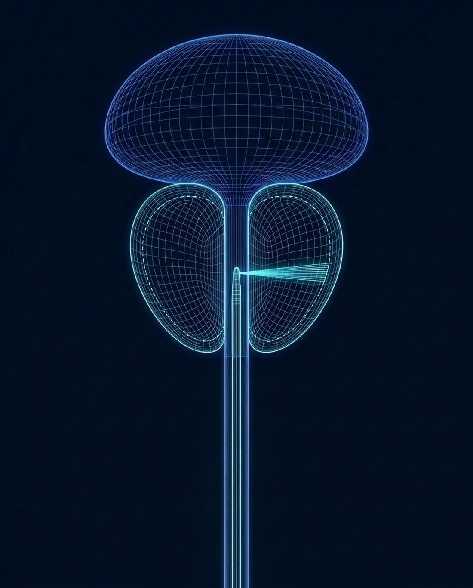

Aquablation recovery,
start to finish
Aquablation is real surgery with a genuinely moderate recovery: one night in the hospital, a catheter measured in days, and most men back at a desk within a week. Dr. Sawkar has walked more than 250 men through this exact timeline; here it is without varnish.

Medically reviewed by Hari Sawkar, MD, board-certified urologist · Updated September 2026
The timeline
Surgical result, sub-surgical convalescence. The waterjet removes tissue without heat, and the recovery shows it.
Night 0 to day 2: hospital and catheter
One overnight stay is typical, with the catheter out in a day or two. Some blood in the urine early on is normal and clears. Flow improvement is usually obvious immediately.
Week 1: home and upright
Walking from day one, desk work for most men by the end of the week. Burning and urgency taper daily. Hold heavy lifting.
Weeks 2 to 4: cleared for everything
Exercise, lifting, travel, and sex return as comfort allows. The obstructing tissue is gone, so what you feel at week four is essentially the durable result.
Aquablation recovery week by week
The same timeline as a table, with the two questions men actually ask at each stage: what is normal, and what is a call-the-office sign.
| When | Urine and catheter | Activity | Normal | Call the office if |
|---|---|---|---|---|
| Day 0 to 1 | Catheter in, hospital overnight; urine pink to red | Walk the halls the evening of surgery | Bladder spasms, a full feeling, small clots | Bleeding that does not lighten with fluids, or fever |
| Days 2 to 3 | Catheter out for most men; the stream is noticeably stronger | Home, short walks, stairs are fine | Burning with urination, urgency, pink urine on and off | Unable to urinate after the catheter comes out, or clots you cannot pass |
| Week 1 | Urine clearing; occasional pink after activity | Desk work for most men by the end of the week; no lifting over about 10 pounds | Frequency and urgency tapering daily; tiredness | Fever, chills, or pain that is getting worse instead of better |
| Week 2 | Mostly clear; a brief return of pink urine around day 10 to 14 is common as the healing surface sheds | Driving once off prescription pain medication; light exercise | Stream strong; some dribbling at the end | Heavy bleeding or a return of clots |
| Weeks 3 to 4 | Clear | Lifting, hard exercise, travel, and sex as comfort allows | Urgency largely gone; nighttime trips falling | Any inability to urinate |
| Weeks 6 to 12 | Clear | No restrictions | The durable result: what you feel now is essentially what you keep | New symptoms, which are rare, warrant a visit and a flow check |
Typical ranges from more than 250 cases. Very large glands and men with weak bladders going in may run a week or two behind this table, which is normal.
Common questions about Aquablation recovery
How long is the catheter in after Aquablation
Typically one to two days, often removed before you leave the hospital or at the first office check. Flow tends to feel dramatically better the moment it is out.
When can I go back to work
Desk work in about a week for most men; physically demanding work in two to four. The heat-free resection tends to make the early days more comfortable than traditional surgery.
Is blood in the urine normal
Early on, yes, intermittently for up to a few weeks as the resection surface heals. Heavy bleeding, clots you cannot pass, or inability to urinate are call-the-office signs.
How long do you bleed after Aquablation
Pink or red urine for the first few days, then on and off for two to three weeks, often with a brief return around day 10 to 14 as the healing surface sheds. Heavy bleeding, clots you cannot pass, or inability to urinate are reasons to call the office the same day.
How long is the recovery after Aquablation
One night in the hospital, a catheter for a day or two, desk work in about a week, and a full return to exercise and lifting at two to four weeks. The result you feel at three months is the durable one.

Know your plan before the day
Every Aquablation patient leaves the consultation with the timeline, the restrictions, and exactly who to call, drawn from more than 250 cases. Same-day and next-day appointments, Medicare and most PPO plans accepted.
Chief of Urology, Providence St. Joseph Hospital · UroLift Center of Excellence · 250+ Aquablation procedures